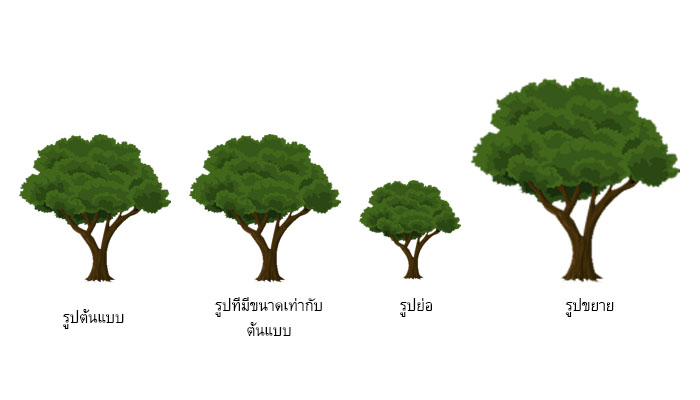
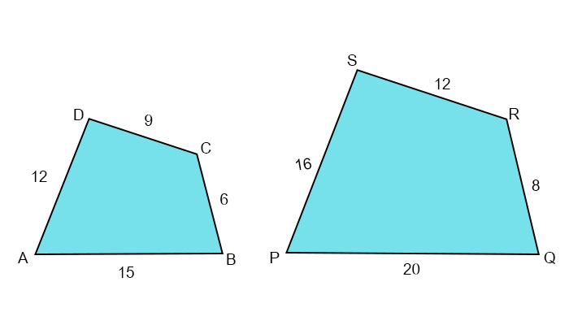
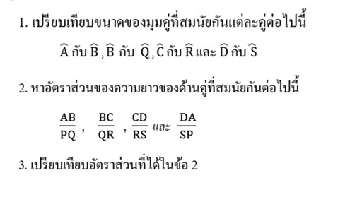
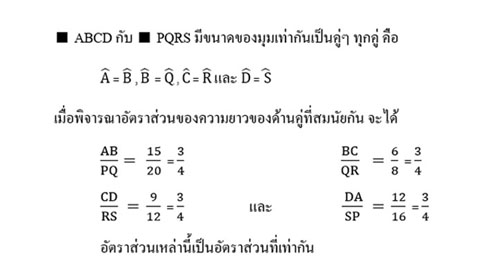
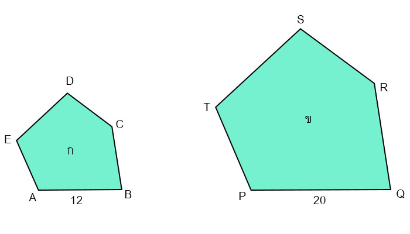
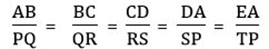
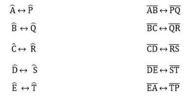
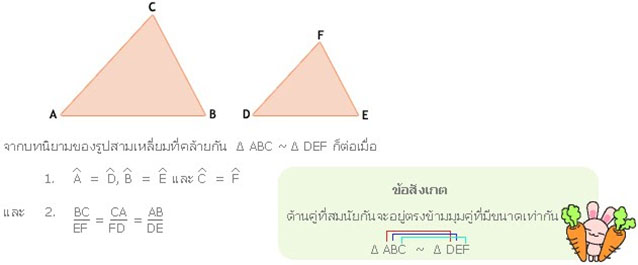
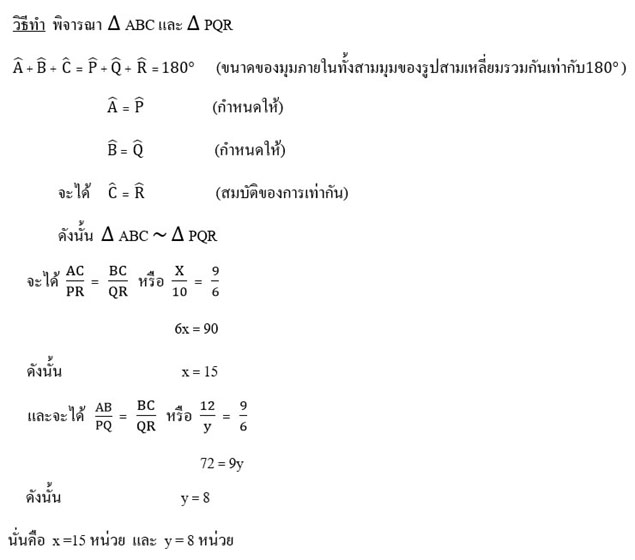

รูปเรขาคณิตที่คล้ายกัน
เมื่อพิจารณารูปร่างของสิ่งของต่างๆ รอบตัวเรา ก็จะพบว่า มีสิ่งของเครื่องใช้ต่างๆ หลายอย่างที่มีรูปร่างเหมือนกัน แต่อาจมีขนาดแตกต่างกัน เรากล่าวว่าสิ่งของเครื่องใช้เหล่านั้นมีรูปร่างที่คล้ายกัน เช่น ถาดชุด หม้อชุด และปิ่นโตเถา
ภาพที่ได้จากการถ่ายเอกสารซึ่งมีขนาดเท่ากับรูปต้นแบบ ภาพที่เกิดจากการย่อหรือภาพที่เกิดจากการขยาย ก็เป็นรูปที่คล้ายกัน
สมบัติของความคล้าย
ความคล้ายของรูปเรขาคณิต A, B และ C ใดๆ เป็นดังนี้
|
1. สมบัติการสะท้อน |
: |
รูปเรขาคณิต A ~ รูปเรขาคณิต A |
|
2. สมบัติสมมาตร |
: |
ถ้ารูปเรขาคณิต A ~ รูปเรขาคณิต B แล้ว |
|
|
|
รูปเรขาคณิต B ~ รูปเรขาคณิต A |
|
3. สมบัติถ่ายทอด |
: |
ถ้ารูปเรขาคณิต A ~ รูปเรขาคณิต B และ |
|
|
|
รูปเรขาคณิต B ~ รูปเรขาคณิต C แล้ว |
|
|
|
รูปเรขาคณิต A ~ รูปเรขาคณิต C |
การที่ความคล้ายมีสมบัติสามประการข้างต้น เรากล่าวว่า ความคล้ายเป็นความสัมพันธ์สมมูล
กำหนดให้ ABCD และ PQRS เป็นรูปสามเหลี่ยมที่คล้ายกันโดย PQRS เป็นรูปขยายของ ABCD ดังรูป
ลองตอบคำถามต่อไปนี้
เฉลย
โดยทั่วไป ถ้ารูปหลายเหลี่ยมสองรูปคล้ายกัน
จะสามารถจับคู่จุดยอดมุมโดยทำให้มุมคู่ที่สมนัยกันมีขนาดเท่ากันเป็นคู่ๆ ทุกคู่
และอัตราส่วนของความยาวของด้านคู่ที่สมนัยกันทุกคู่เป็นอัตราส่วนที่เท่ากัน
ในทางกลับกัน
ถ้ารูปหลายเหลี่ยมสองรูปมีขนาดของมุมเท่ากันเป็นคู่ๆ ทุกคู่
และอัตราส่วนของความยาวของด้านคู่ที่สมนัยกันทุกคู่เป็นอัตราส่วนที่เท่ากัน จะได้ว่า
รูปหลายเหลี่ยมสองรูปนั้นเป็นรูปที่คล้ายกัน
ในทางคณิตศาสตร์ ให้บทนิยามของรูปหลายเหลี่ยมที่คล้ายกัน ดังนี้
บทนิยาม
รูปหลายเหลี่ยมสองรูปคล้ายกัน ก็ต่อเมื่อ รูปหลายเหลี่ยมสองรูปนั้นมี
1. ขนาดของมุมเท่ากันเป็นคู่ๆ ทุกคู่
2. อัตราส่วนของความยาวของด้านคู่ที่สมนัยกันทุกคู่เป็นอัตราส่วนที่เท่ากัน
รูปหลายเหลี่ยมสองรูปที่คล้ายกัน เราเขียนจุดยอดมุมที่สมนัยกันให้อยู่ในลำดับเดียวกัน เช่น มีรูป ก คล้ายกับรูป ข ดังรูป
เราจะเขียนว่า รูป ABCDE ~ รูป PQRST ซึ่งหมายถึง
1. มุมคู่ที่สมนัยกันมีขนาดเท่ากันเป็นคู่ๆ ทุกคู่ตามลำดับ คือ
2. อัตราส่วนของความยาวของด้านคู่ที่สมนัยกันทุกคู่เป็นอัตราส่วนที่เท่ากัน คือ
การเขียนว่า รูป ABCDE ~ รูป PQRST เป็นการแสดงการจับคู่ระหว่างมุม และตัวอย่างที่มีคู่สมนัย ดังนี้
จากตัวอย่างข้างต้น ถ้ามีการเขียนเป็นอย่างอื่น เช่น รูป ABCDE ~ QRSTP อาจทำให้การหาคู่มุมที่สมนัยและด้านคู่ที่สมนัยกันเป็นไปอย่างสับสนได้
การพิจารณาว่า รูปหลายเหลี่ยมสองรูปใดๆ เป็นรูปที่คล้ายกันหรือไม่ จะต้องพิจารณาให้ครบทั้งสององค์ประกอบคือ มีขนาดของมุมคู่ที่สมนัยกันเป็นคู่ๆ ทุกคู่หรือไม่ และมีอัตราส่วนของความยาวของด้านคู่ที่สมนัยกันทุกคู่เป็นอัตราส่วนที่เท่ากันหรือไม่
ตัวอย่างที่ 1
1. พิจารณารูปสี่เหลี่ยมผืนผ้า ABCD และรูปสี่เหลี่ยมผืนผ้า PQRS ดังรูป
จะเห็นว่า ABCD และ PQRS ไม่เป็นรูปที่คล้ายกัน ถึงแม้ว่าขนาดของมุมเท่ากันเป็นคู่ๆ ทุกคู่ แต่อัตราส่วนของความยาวของด้านคู่ที่สมนัยกันทุกคู่ไม่เป็นอัตราส่วนที่เท่ากัน
ตัวอย่างที่ 2
จากรูป จงแสดงว่ารูปสี่เหลี่ยมด้านขนาน DUCK และรูปสี่เหลี่ยมด้านขนาน FISH
เป็นรูปสี่เหลี่ยมที่คล้ายกัน
รูปสามเหลี่ยมที่คล้ายกัน
สิ่งก่อสร้างหลายอย่างรอบๆ ตัวเราที่ส่วนประกอบมีลักษณะเป็นรูปสามเหลี่ยมที่คล้ายกัน เช่น หน้าจั่วบ้านและโครงหลังคา ในหัวข้อที่ผ่านมา เราได้ศึกษาเกี่ยวกับบทนิยามของรูปหลายเหลี่ยมที่คล้ายกัน เราสามารถนำบทนิยามนี้มากำหนดเป็นเงื่อนไข พิจารณาความคล้ายกันของรูปสามเหลี่ยม ดังนี้
โดยทั่วไปถ้ารูปสามเหลี่ยมสองรูปมีขนาดของมุมเท่ากันเป็นคู่ๆ สามคู่แล้ว อัตราส่วนของความยาวของด้านที่สมนัยกันทั้งสามคู่เท่ากัน นั่นคือ ถ้ารูปสามเหลี่ยมสองรูปมีขนาดของมุมเท่ากันเป็นคู่ๆ สามคู่ เราจะสรุปได้ว่า รูปสามเหลี่ยมสองรูปนั้นเป็นรูปสามเหลี่ยมที่คล้ายกัน โดยไม่จำเป็นต้องตรวจสอบอัตราส่วนของความยาวของด้านคู่สมนัยกัน
ในทางคณิตศาสตร์จึงให้บทนิยามของรูปสามเหลี่ยมที่คล้ายกัน ดังนี้
|
บทนิยาม |
|
รูปสามเหลี่ยมสองรูปคล้ายกัน ก็ต่อเมื่อ รูปสามเหลี่ยมสองรูปนั้นมีขนาดของมุมเท่ากันเป็นคู่ๆ สามคู่ |
เราสามารถนำบทนิยามข้างต้นนี้ไปใช้ตรวจสอบว่ารูปสามเหลี่ยมสองรูปเป็นรูปสามเหลี่ยมที่คล้ายกันหรือไม่
ดังตัวอย่างต่อไปนี้
จากรูป จงหาค่า x และ y
